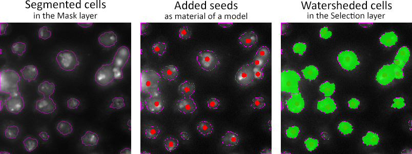

Tools Menu
Additional tools
Back to Index --> User Guide --> Menu
Contents

Measure length
Allows measuring the length on the image.
Measure Tool
Measure Tool of MIB is based on Image Measurement Utility written by Jan Neggers, Eindhoven Univeristy of Technology. Using this tool it is possible to perform number of different length measurements and generate intensity profiles that correspond to these measurements. Press here for details.
Line measure
Measures the linear distance between two points. Press and hold left mouse button to draw a line that connects two object. The result will be shown in the pop-up and Matlab main window. Also the length of the measurement is copied to the system clipboard and can be pasted using the Ctrl+V key shortcut. The linear measuring tool can also be called from the toolbar. The pixel sizes are defined in the Dataset parameters.
Free hand measure
Similar to the line measure tool, except that the measured distance can be drawn arbitrarily.
Classifiers
In this section MIB has two classifiers. One is designed for membrane detection but works for other objects as well. The second classifier is based on SLIC superpixels/supervoxels for the classification.
- Membrane detection, a method for automatic segmentation of images using Random Forest classifier. The current version of the classifier is based on Random Forest for Membrane Detection by Verena Kaynig and utilize randomforest-matlab by Abhishek Jaiantilal. Please refer to the help section of the corresponding function.
- Superpixels classification, is good for objects that have distinct intensity properties. In this method, MIB first calculates SLIC superpixels for 2D or supervoxels for 3D and classify them based on set of provided labels that mark object of interest and the background. See more in this example.
Semi-automatic segmentation
Methods for automated image segmentation and object separation.

Object separation
Tools for separation of objects that can be as materials of the current model, the mask or selection layers.
Example of seeded watersheding of cells:

Stereology
The stereology tool of MIB counts number of intersections between materials of the opened model and the grid lines. The spacing between grid lines can be defined in pixels or in the image units. The results of the stereology analysis can be exported to Matlab or Microsoft Excel.
A brief demonstration is available in the following video:
 https://youtu.be/5gOiyVNr2vY
https://youtu.be/5gOiyVNr2vY

To calculate the grid use the Generate button in the Grid options panel. The analysis is started by pressing the Do stereology button.
The include annotations checkbox is selected the Stereology tool also calculates occurances of the annotation labels (Segmentation Panel->Annotations tool)
Important note! When the thickness of the grid is 1 pixel (the grid extra thickness is 0) the grid may not be shown properly at the magnifications that are lower than 100%. To see the grid also at low magnification, increase the extra grid thickness value.
Back to Index --> User Guide --> Menu